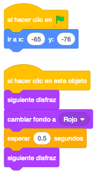
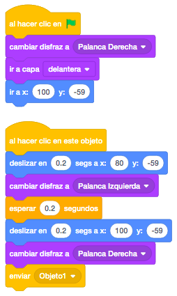
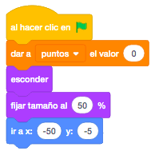
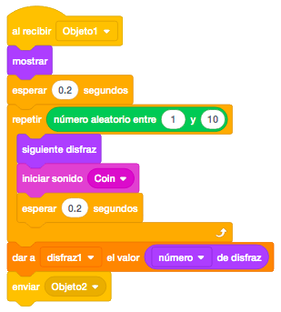
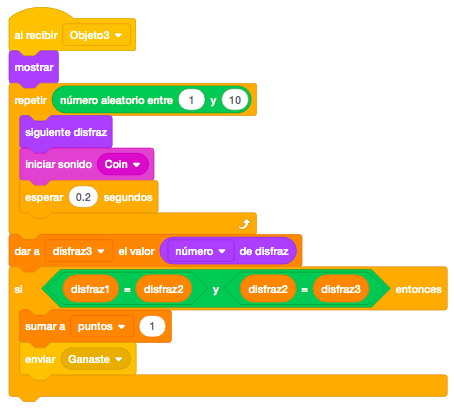
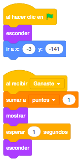

Para este juego necesitamos una palanca para comenzar el juego y pondremos 5 botones de colores distintos
para cambiar el color de fondo del escenario. También utilizaremos una palanca para accionar el juego y un
texto que diga "GANASTE".
Los objetos que se van moviendo los compondremos de objetos de la biblioteca. Los tres objetos tendrán como
mínimo 5 disfraces y en los tres serán los mismos disfraces. Estos objetos los formaremos con objetos de la
biblioteca de Scratch.
Para poder probar el juego, pondremos 2 disfraces para que sea más fácil que coincidan.
Usaremos 5 escenarios con cinco colores distintos para poder seleccionarlo con los botones.
Para descargar los objetos necesarios para el juego, lo haremos desde este link. Es un archivo comprimido con 76 objetos y 5 escenarios. Lo descargaremos y lo descomprimimos en el directorio del alumno.
El juego consiste en que tenemos que acertar con la combinación ganadora que consistirá en que todas las
imágenes sean iguales.
Las imágenes se irán moviendo y primero se moverá y parará el primer objeto, luego el segundo y por último
el tercero.
Si los tres coinciden la misma imagen, puntuaremos.
Empezaremos por colocar los escenarios (5 colores de fondo) y ponemos uno de ellos.

Ahora colocaremos los 5 botones de colores en sus posiciones.
Lo que haremos con los botones será elegir el color de fondo, con lo que simularemos que presionamos el
botón al pulsarlo mediante sus dos disfraces y poner el fondo del color que pulsamos.

Haremos lo mismo en los 5 botones.
Ahora pondremos la palanca. La posicionaremos y le pondremos el disfraz derecho.
Al pulsar encima, haremos que parezca que la palanca se mueve a la izquierda cambiando de disfraz y
deslizándola un poco.
Al final, enviaremos un mensaje para que el primer objeto de la pantalla recreativa empiece a moverse.

Ahora Vamos a programar el primer objeto. Lo posicionaremos y le daremos un tamaño del 50%. También inicializaremos la variable "Puntos" a "0" y lo dejaremos oculto

A continuación programaremos el recibir el mensaje "Objeto1", en el que mostraremos el objeto y cambiaremos
un número de veces aleatorio los disfraces. Reproduciremos el sonido "Coin" y esperaremos 0,2 segundos para
ver los disfraces.
Crearemos 3 variables donde guardaremos el número final del disfraz que tenga cada uno de los objetos.
Después del bucle y cuando ya tenemos el primer objeto seleccionado, guardaremos en "Disfraz1" el número del
disfraz final del primer objeto.
Finalmente, mandaremos el mensaje "Objeto2" para hacer lo mismo con el segundo objeto.

Para que funcione correctamente el juego y sume puntos, tendremos que poner los 3 objetos con los mismos
disfraces y en el mismo orden.
Al comprobar si tenemos la misma imagen en los tres objetos, lo haremos por el "Número De Disfraz".
La programación del segundo objeto será igual salvo que ya no tenemos que inicializar la variable "Puntos", el
disfraz resultante lo guardaremos en la variable "Disfraz2" y que en lugar de enviar el mensaje "Objeto2"
enviaremos "Objeto3".
Por último pondremos y programaremos el tercer objeto que será igual que el segundo salvo que el disfraz
resultante lo guardaremos en la variable "Disfraz3" y ya no enviaremos ningún mensaje en este caso.
Es en este objeto donde cuando ya tengamos los 3 disfraces seleccionados, los compararemos y si son los tres
iguales, enviaremos el mensaje "Ganaste".

Para terminar, pondremos el objeto con el texto "GANASTE", que colocaremos y ocultaremos al principio y al recibir el mensaje "Ganaste" sumaremos uno a la variable "Puntos" y mostraremos el texto durante uno o dos segundos.

Otro reto que se podría añadir sería en lugar de comparar los números de disfraz, compararlo por el nombre del disfraz para que no tuvieran que estar colocados en el mismo orden.
Y el juego quedaría así.
Para ver el juego terminado pulsa
aquí.
Para descargarte el juego terminado pulsa
aquí.